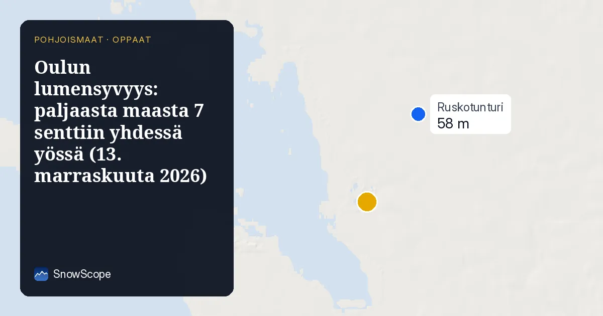

Oulun lumensyvyys: paljaasta maasta 7 senttiin yhdessä yössä (13. marraskuuta 2026)
Oulu näki ensimmäisen merkittävän lumipeitteen saapuvan yön aikana 13. marraskuuta. Kaupungin mittausasema rekisteröi 7 cm—selvästi keskimääräistä enemmän marraskuun puolivälissä—sen jälkeen kun paljasta maata oli ollut vielä 24 tuntia aiemmin. Lumi oli osa laajempaa tapahtumaa, joka kosketti koko Pohjanlahden rannikkoa.
Katso kohteen Oulu lumiennuste reaaliajassa SnowScope-sovelluksessaLumensyvyys, puuterihälytykset ja 3D-kartta, ilmaiseksi.
Äkillinen muutos koko rannikolla
Lumi ei pudonnut pelkästään Ouluun. Hailuoto saari luoteessa mitasi samalla aamulla 5 cm, kun taas sisämaahan sijoittuva Siikajoki Ruukki rekisteröi 8 cm. Nämä mittausasemat olivat 12. marraskuuta paljaita; perjantaihin mennessä niillä kaikilla oli tuoretta lunta. Tämä yhtenäisyys 40 km:n alueella—mittaukset eivät poikkea toisistaan paljon—osoittaa tasaisen lumisateen, joka pyyhkäisi alueen yhden yön aikana.
Tämänkaltainen äkillinen muutos ruskeasta valkoiseksi on tyypillistä suomalaiselle syksylle. Olosuhteet kohtaavat: kylmä ilma liikkuu sisään, kosteus on valmis, ja muutamassa tunnissa maa muuttuu paljaasta lumipeitteiseksi. Jokaiselle, joka ei ollut tarkistanut säätä ennakkoon, perjantai aamu toi yllätyksen.

Keskimääräistä korkeampi, mutta saapuminen myöhässä
Oulun lumitilastot kattavat 46 edellistä talvea. Lumi maassa 13. marraskuuta on tavallista—se oli olemassa 33 talvesta—mutta se on yleensä ohutta. Mediaani on 2 cm, ja vain joka neljäs talvi saavuttaa 5 cm tai enemmän. Tämän päivän 7 cm on tämän päivämäärän yläkaartilla, selvästi keskiarvoa korkeampi.
Kuitenkin ajoitus on huomionarvoinen. Puolessa aikaisemmista talvista kestävä lumipeite oli saapunut jo 28. lokakuuta mennessä; tänä vuonna se saapui kaksi viikkoa myöhemmin. Joten Oulu saavutti merkittävän syvyyden, mutta kausi itse alkoi hitaasti. Syvimmäs syvyys, joka on koskaan rekisteröity 13. marraskuuta, oli 24 cm, joten marraskuun puolivälissä voi olla paljon syvempää lunta, jos olosuhteet ovat riittävän kylmät.
Vertailut viimeisen viiden kauden kanssa
Viimeisen viiden kauden aikana Oulussa 13. marraskuuta on ollut: 1 cm (2021–22), paljas maa (2022–23), 5 cm (2023–24), paljas maa (2024–25) ja 1 cm (2025–26). Tämän vuoden 7 cm on tämän sarjan korkein—ei ennätys, mutta vahva alku. Vaihtelu osoittaa, kuinka arvaamatonta marraskuun alun lumi voi olla tässä alueella.
Merkityksellisempää on edessä olevan talven muoto. 1. joulukuuta mennessä tyypillinen syvyys täällä on 9 cm. Joulukuun puolivälissä 14 cm. Tammikuun puolivälissä noin 27 cm. Joten 13. marraskuuta pudonnut 7 cm on perusta; todellinen kasautuminen rakentuu joulukuun kautta uuteen vuoteen.
Mitä seuraavat päivät lisäävät
Perjantaina tulee noin 2 cm enemmän lunta, lämpötilat juuri nollan alapuolella. Lauantai pysyy kylmänä, noin -3 °C alimmillaan, ja pääosin kuivana. Sunnuntaina on hieman lämpenemistä, noin 3 °C:een, vähän uutta lunta. Maanantaina sade liikkuu sisään—2–8 mm tarkasta ajoituksesta riippuen—ja lämpötilat nousevat 1–4 °C:een.
Kauden alun lumi on hauras. Se usein istuu löyhänä paljaalla maalla tai sammalilla, ilman kovaa pohjaaa alle. Sade imeytyy siihen, sitoo sen yhteen, ja sitten jäätyy uudelleen, kun kylmyys palaa. Tuloksena on todennäköisesti kuori ja sohjo kuin puuteri, mutta se ei katoa kokonaan tällä viikolla.
Mitä tämä tarkoittaa seuraavalla viikolla
Lauantai on paras ikkuna lumelle, joka tuntuu tuoreelta ja puhtaalta. Lämpötilat pysyvät nollan alapuolella, eikä sade ole vielä alkanut. Sunnuntai-iltapäivästä alkaen asiat pehmenevät. Maanantain sade merkitsee muutosta: peite ohenee, ja vettynyt lumi tarttuu kenkiin ja vaatteisiin.
Tämä ensimmäinen merkittävä lumipeite kertoo vähän siitä, kuinka syvä tai pitkäkestoinen talvi tulee olemaan. Mutta se merkitsee todellista muutosta syksystä hiljaisempaan, kylmempään kauteen. Kahden viikon odotuksen jälkeen lokakuun lopusta lähtien, Oulun talvi on vihdoin alkanut.
Vinkkejä laskijoille
- Lauantai on sinun päivä: lämpötilat pysyvät noin -3 °C:ssa, tuore lumi ei kasaa paljon lisää, eikä sade ole vielä alkanut. Kävele poluilla ja ranta-reiteillä aamun valossa.
- Tuore lumi piilottaa ensimmäiset jääpatalit silloilla ja veden lähellä. Testaa jokainen askel, erityisesti paikoissa, joissa varjo kertyy puiden alle.
- Maanantain sade muuttaa uuden peitteen sohjoiksi. Käytä vedenpitäviä kenkiä työmatkoilla; tavalliset kangasmateriaalit tai nahka kastuvat läpi.
- Kauden alun lumi paljaalla sammalilla tiivistyy ja jäätyy helposti. Jos pyöräilet tai juokset ulkona, valitse korkean näkyvyyden vaatetus ja vähennä nopeutta rinteillä ja mutkissa.
- Seuraavalla viikolla tarkista viralliset lumivyöryennusteet, jos aiot kävellä tai hiihtää rinteillä tai metsässä: jopa ohut lumi voi liikkeelle lähteä jyrkässä maastossa, kun se on imbeytynut sateen vaikutuksesta ja sitten jäätynyt uudelleen.
Näistä luvuista
Hiihtokeskusten lumensyvyydet ovat syvin lumi keskuksen ylärinteillä näytettynä päivänä; ne ovat arvioita alueelle, eivät mittaus yhdessä pisteessä. Ennusteet voivat muuttua. Lue aina virallinen lumivyöryennuste ennen rinteiden ulkopuolelle lähtöä.
Viittaa tähän raporttiin
Tutkimukseen, opetukseen tai mediaan: luvut ja kaaviot ovat vapaasti käytettävissä CC BY 4.0 -lisenssillä tällä lähdeviitteellä.
SnowScope (2026), Oulun lumensyvyys: paljaasta maasta 7 senttiin yhdessä yössä (13. marraskuuta 2026), https://snowscope.app/blog/fi/2026/11/oulu-snow-depth-13-november-2026.html, luettu 2026-11-13
SnowScope (Atlas Labs). (2026, November 13). Oulun lumensyvyys: paljaasta maasta 7 senttiin yhdessä yössä (13. marraskuuta 2026). SnowScope snow reports. https://snowscope.app/blog/fi/2026/11/oulu-snow-depth-13-november-2026.html
BibTeX
@misc{snowscope2026oulusnowdepth13november2,
author = {{SnowScope (Atlas Labs)}},
title = {Oulun lumensyvyys: paljaasta maasta 7 senttiin yhdessä yössä (13. marraskuuta 2026)},
year = {2026},
month = nov,
howpublished = {\url{https://snowscope.app/blog/fi/2026/11/oulu-snow-depth-13-november-2026.html}},
note = {Published 2026-11-14 13:29 UTC; accessed 2026-11-13}
}· CC BY 4.0 · Menetelmät, data ja työkalut →
Seuraa: Oulu
Ilmainen: viesti, kun uutta lunta on tulossa, ja ennuste joka aamu.